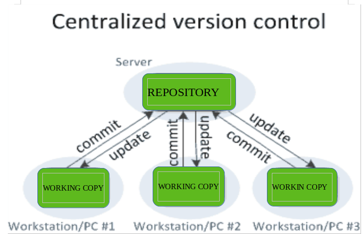
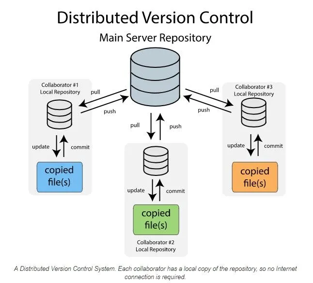

What Are Version Control Systems and Why You Should Care
Hey there! Welcome back to The Dev Anvil, where we’re always forging better code. Today, we’re breaking down a topic every developer — especially beginners — must understand: Version Control Systems.
If you’ve ever broken your project, lost an important file, or ended up with 10 confusing versions like “final_final_edited_v3.txt”, then version control systems are the solution you’ve been missing.
Let's Dive In.
What is A Version Control System?
A Version Control System (VCS) is a system that records changes to a file or set of files over time, allowing users to recall specific versions later and collaborate without overwriting each other’s work. It is a foundational practice in software development and project management, enabling teams to collaborate efficiently, track changes, and prevent conflicts.
At its core, a VCS acts like a "time machine" for your project. It maintains a detailed history of every modification made to the codebase or other digital assets, including who made the change, when, and why. This process eliminates the need for manual, error-prone methods like saving multiple copies of files with names such as "document_final_v2.txt".
Key Concepts of a VCS
VCS tools commonly use concepts like:
- Repository: A database that stores all the files, changes, and history of a project.
- Commit: A "snapshot" of the project at a specific point in time, along with a descriptive message.
- Branch: A separate, parallel line of development that allows developers to work on new features or bug fixes in isolation from the main codebase.
- Merge: The process of integrating changes from one branch back into another, such as the main or master branch.
Centralized vs. Distributed Systems
The two main types of version control systems (VCS) have different architectures:
Centralized VCS (CVCS)
Like the name suggests, CVCS operate on a centralized model i.e. all the data and history of the project are stored in one central server
This approach was the traditional standard for version control systems for many years, offering a simpler management model for administrators. However, the main challenge is the single point of failure — if the central server goes down, all collaboration stops and the project history may be at risk.
Pros:
- Simpler Management: Generally easier for system administrators to set up and maintain.
- Better for Large Binary Files: Users only pull the files they need, not the whole history, which is more efficient for large, non-code files.
Cons:
- Single Point of Failure: If the central server fails, you lose project history and collaboration stops.
- Network Dependency: A network connection is required for nearly all operations.
- File Locking: Often uses file locking, limiting simultaneous work on the same file.
Examples: Subversion, Perforce
Distributed VCS (DVCS)
In contrast to CVCS, DVCS operates on a decentralized model. Each developer clones the entire repository to their local machine, including the full history. Commits are made to this local repository first, and then changes can be pushed to a central or shared remote repository.
This model is precisely why Distributed Version Control Systems, most notably Git, have become the undisputed industry standard. Git's power lies in its ability to enable robust offline work, provide unparalleled redundancy, and offer immense flexibility, transforming how teams collaborate and manage code.
Pros:
- Offline Work: Developers can commit changes and access history without a network connection.
- Redundancy: Every developer’s local repository acts as a full backup of the entire project history.
- Flexibility: Easier to experiment with branches and merge changes.
- Performance: Many operations are faster as they occur locally.
Cons:
- Storage: Local repositories can be large as they contain the full project history.
- Learning Curve: Can be more complex to grasp initially.
- Complexity: Managing multiple repositories and synchronizing changes can be challenging.
While CVCS is simpler to manage and can handle large binary files more efficiently (as users only pull needed files, not the whole history), DVCS has become the industry standard. The benefits of DVCS, such as robust data redundancy, offline work capabilities, and superior support for modern, agile development workflows, generally outweigh the disadvantages for most software projects.
Why You Should Care (The Benefits of a VCS)
Version control is essential for individuals and teams alike because it provides a safety net and streamlines the development process. Regardless of the type, integrating a VCS into your workflow, particularly Git, offers immense advantages:
- Error Reduction and Recovery: Version control acts as a "time machine" for your project. If a new change introduces a bug or causes an outage, you can easily revert to a previous, stable version, minimizing downtime and data loss.
- Seamless Collaboration: It allows multiple people to work on the same project simultaneously without overwriting each other's work. The system highlights conflicts between changes, which can then be resolved in a structured manner.
- Complete Project History: A comprehensive, long-term history of every file is maintained, including who made a change, when they made it, and the purpose of the change (via commit messages). This audit trail is invaluable for debugging, auditing, and understanding the evolution of the project.
- Safe Experimentation: Developers can create isolated branches to work on new features or experiment with new ideas without affecting the main, stable codebase. If an experiment fails, the branch can simply be discarded; if it succeeds, it can be seamlessly merged back in.
- Improved Accountability and Visibility: Every change is tied to an author, date, and message, increasing transparency and accountability within a team. Project managers can use this information to track progress and identify bottlenecks.
For frontend work, this is crucial for managing CSS changes, testing new JavaScript frameworks on a branch, or coordinating with design teams without breaking the live UI.
Popular systems include Git (the most widely used distributed VCS), Subversion (SVN) and Mercurial. Services like GitHub and GitLab provide cloud-based hosting for repositories and additional collaboration features like pull requests.
Getting Started with Version Control (Using Git)
Since Git is the industry standard for Distributed Version Control Systems (DVCS), this is the system you should prioritize learning. Getting started is a straightforward process involving three main steps:
- Install Git
- Download: Visit the official Git website and follow the installation instructions for your operating system (Windows, macOS, or Linux).
- Configure: Once installed, open your terminal or command prompt and run these two commands to identify yourself for future commits:
- Initialize a Repository
- Create Local Repository: Navigate to your project folder in your terminal and run the following command. This creates a hidden .git folder that tracks all changes:
- Staging and Committing: Once you've made changes, you use the Staging Area (or Index) to select which changes you want to include in your next snapshot. This allows you to group related changes into a single, clean commit.
- Connect to a Remote Host
- Create Remote: Create a new, empty repository on your chosen hosting platform (e.g., GitHub). The platform will provide you with a URL (e.g., https://github.com/user/project.git).
- Link and Push: Link your local repository to the remote one and "push" your local commits to the cloud:
First, you need the Git software installed on your computer.
git config --global user.name "Your Name"
git config --global user.email "youremail@example.com"
Every project that uses version control must start with a repository.
git initgit add . # Stages all changes (moves them to the staging area)
git commit -m "Initial commit" # Creates the first commit While Git works locally, using a service like GitHub or GitLab provides a centralized backup, facilitates collaboration, and enables integration with other developer tools.
git remote add origin [Your Repository URL]
git push -u origin main #Pushes your local commits to the remote repositoryThis synchronizes your local history with the remote host.
The -u flag in the command above is important. It tells Git to remember that your local main branch should track the remote origin/main branch, making future pushes as simple as running just git push.
By mastering these fundamental commands, you establish the safety net and collaborative foundation necessary for any modern development project.
If you are new to VCS and Git and want a step-by-step interactive guide, we highly recommend checking out the W3Schools Git Tutorial to master the fundamentals.
Conclusion
In Summary, A Version Control System is not just a tool for managing code, they are fundamental in modern software development and beyond, serving as an essential system for tracking, managing, and coordinating changes to digital assets. It acts as a project's memory, enabling individuals and teams to collaborate effectively while providing a vital safety net against errors.
The shift from Centralized VCS (CVCS) to Distributed VCS (DVCS), led by tools like Git, has fundamentally changed development workflows by offering greater flexibility, robustness, and speed through local repositories and easy branching.
For frontend developers in 2025, understanding and leveraging a VCS, especially Git, is not just a best practice—it's a fundamental skill that underpins efficiency, collaboration, and the ability to build robust, maintainable web experiences.
Thank you for reading and have a wonderful rest of your day. 👋